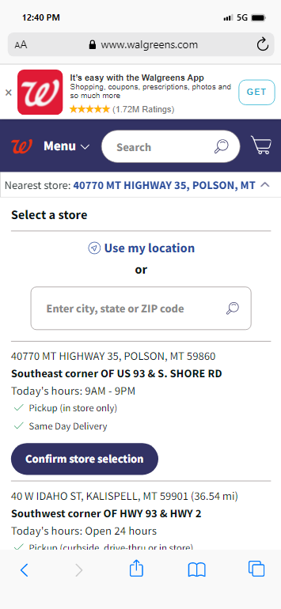

Design Principles
Melody T Curran
VISUAL HIERARCHY
Neil Patel
I think Neil Patel's website is effectively utilizing the Visual Hierarchy principle of design. The headline which contains the hook is more prominent than any other elements in the site. Below the headline is a few lines of paragraph that supports the headline. Then a big button with a nice contrast of white on dark orange. The site also uses spacing very well to group contents that are related. You can see how there are plenty of spaces between the headline group and the text field and button. Lastly, on the far bottom, another statment that says swipe up which is has plenty of white spaces yet still noticeable because of the choice of color for the word "swipe up".
FITT'S LAW
Walgreen's
I think the Fitt's Law is somehow related to Visual Hierarchy. But this principle deals more with the distance between the user and the target element. Fitt's Law stated that the shorter the distance between the user and the target and the larger the target, the more chances of that target to get clicked. The closer example I could find is the Walgreen's website. The design is kind of noisy and busy due to some elements that are competing for my attention. But on the flip side, the important elements are in close proximity with my line of sight. The search bar is there, the select a store field is there, the cart is there, the list of store nearby is there. They're all in one place minimizing the need to travel away from the page.
RULE OF THIRDS
Soulful Vibes
The Rule of Thirds principle is the same as the Rule of Thirds in art where you'll draw a grid overlay and position the elements on the upper-left down to bottom-left, goes up to the right and down to botton-right. It's pretty hard to find an example for this one because almost every website uses this principle on desktop view but changes when switched to mobile views. I found Soulful Vibes Co's banner consistent with the Rule of Thirds even on mobile browser. Here, there is that heading on the banner that says who they are on the very sweet spot of the grid. And then a picture of what seems like a dried herb that summons spirits. The use of the Rule of Thirds on this one is not too accurate but it's the closest I could find.